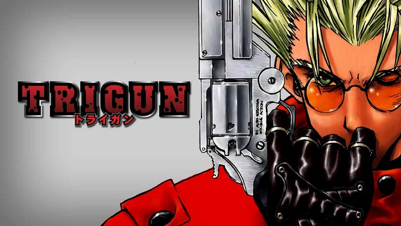
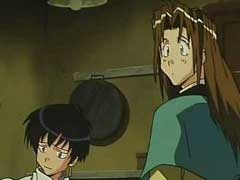

TRIGUN
Plot
Known for its Space Western theme, Trigun is about a man named "Vash the Stampede" and the two Bernardelli Insurance Society employees who follow him around in order to minimize the damages inevitably caused by his appearance. Most of the damage attributed to Vash is actually caused by bounty hunters in pursuit of the "60,000,000,000$$" (sixty billion "double dollars") bounty on Vash's head for the destruction of the city of July. However, he cannot remember the incident due to retrograde amnesia, being able to recall only fragments of the destroyed city and memories of his childhood past. Throughout his travels, Vash tries to save lives using non-lethal force. He is occasionally joined by a priest, Nicholas D. Wolfwood, who, like Vash, is a superb gunfighter with a mysterious past.
As the series progresses, we learn more about Vash's mysterious history and the history of human civilization on the planet Gunsmoke. The series often employs comic relief and is mostly light-hearted although its tone shifts toward darker and more dramatic situations as the series draws to a conclusion. The story line also involves moral conflict pertaining to the morality of killing other living things
BackCharacters
Vash the Stampede- 
Meryl Strife and Milly Thompson
Nicholas D. Wolfwood
Knives Millions
Rem Saverem
Gung-Ho Guns